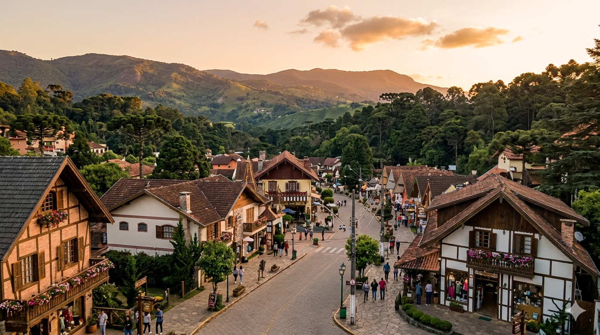
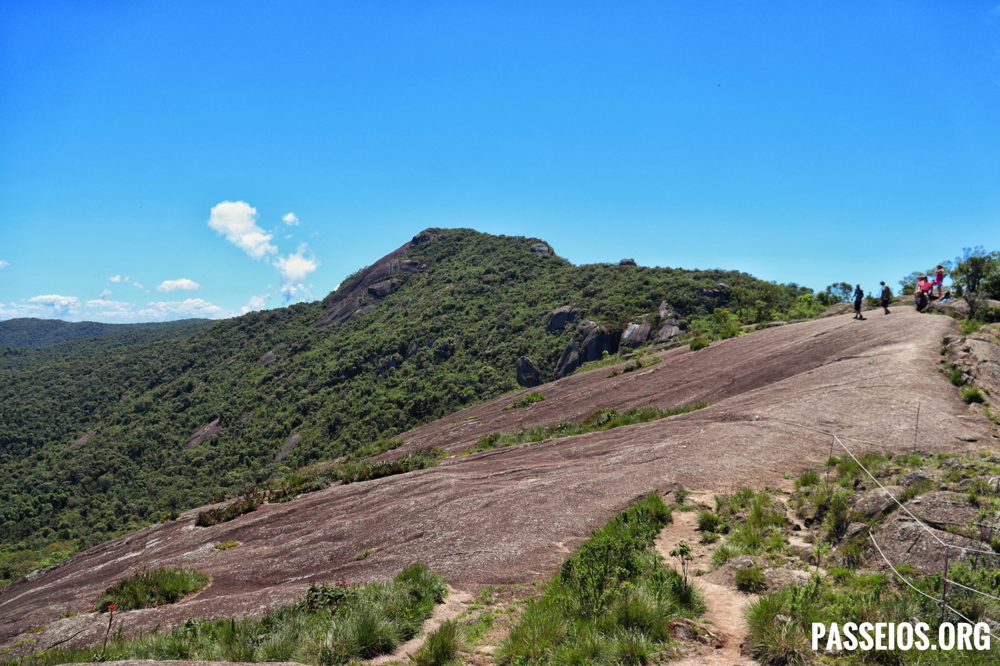
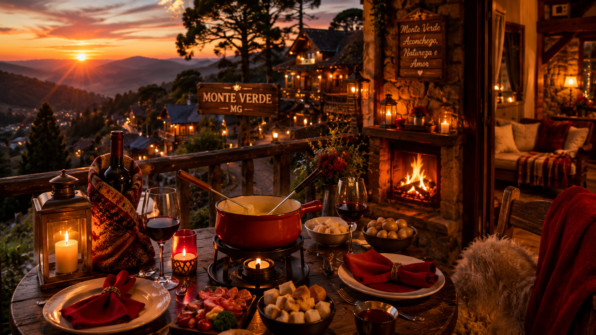

Pedra Redonda
Uma das trilhas mais famosas da região, com vista panorâmica incrível das montanhas.
Clima aconchegante, natureza e romance nas montanhas de Minas Gerais
Monte Verde é um dos destinos turísticos mais famosos de Minas Gerais, conhecido pelo clima frio, belas paisagens naturais e atmosfera romântica.
Localizada na Serra da Mantiqueira, a cidade atrai turistas que procuram tranquilidade, gastronomia, ecoturismo e experiências aconchegantes em meio às montanhas.

Monte Verde oferece diversas opções de trilhas, mirantes e passeios em contato com a natureza.
Monte Verde é considerada um dos destinos mais românticos do Brasil, sendo muito procurada por casais durante o inverno.

Uma das trilhas mais famosas da região, com vista panorâmica incrível das montanhas.
Mirante natural ideal para caminhadas e contato com a natureza.
Principal avenida turística da cidade, repleta de lojas, cafés, restaurantes e pousadas aconchegantes.
Uma das atrações mais procuradas pelos turistas durante o inverno.
Passeios com cavalos, quadriciclos e trilhas em meio às montanhas.
Monte Verde é famosa pelas pousadas charmosas, clima frio, fondue e experiências românticas.

A culinária de Monte Verde mistura sabores mineiros com influências europeias, especialmente suíças e alemãs.
| Prato típico | Destaque |
|---|---|
| Fondue | Principal atração gastronômica |
| Chocolate quente | Muito consumido no inverno |
| Comida mineira | Sabores tradicionais de Minas Gerais |
| Trutas | Pratos típicos da região serrana |
Os turistas encontram diversas lojas de artesanato, roupas de inverno e produtos típicos da serra.
| Informação | Detalhe |
|---|---|
| Estado | Minas Gerais |
| Tipo de turismo | Natureza, romance e inverno |
| Principal destaque | Clima frio e montanhas |
| Melhor experiência | Trilhas e gastronomia romântica |
“Monte Verde conquista visitantes com o clima aconchegante, paisagens naturais e experiências românticas inesquecíveis.”